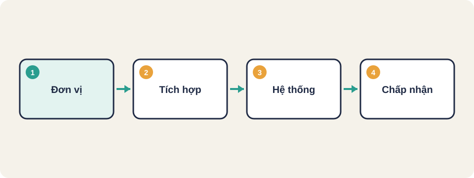
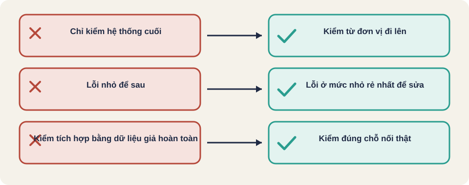

Hình vẽ gốc, dùng để minh họa thứ tự các bước chính của bài.
Kiểm thử đơn vị, tích hợp, hệ thống và chấp nhận. Mỗi mức tìm loại lỗi khác nhau.

Hình vẽ gốc, dùng để minh họa thứ tự các bước chính của bài.
Kiểm thử từng hàm, cô lập nó khỏi phần còn lại. Đây là mức rẻ nhất và tìm lỗi nhanh nhất.
Ví dụ: hàm giam_gia ở bài trước có thể kiểm riêng, không cần giao diện hay cơ sở dữ liệu.
Hai hàm đều đúng riêng, nhưng ghép lại có thể sai. Ví dụ: một hàm trả giá theo đơn vị nghìn đồng, hàm kia lại cộng theo đồng.
Kiểm thử tích hợp tìm các lỗi ở chỗ giao tiếp giữa các phần.
Thuật ngữ trong slide này: Kiểm thử tích hợp (integration testing): Kiểm khi hai hay nhiều phần của hệ thống ghép lại, xem dữ liệu có đi qua chỗ nối đúng không.
Hệ thống: chạy cả chương trình như người dùng, theo các kịch bản đầy đủ.
Chấp nhận: người dùng hoặc khách hàng kiểm tra xem sản phẩm có đáp ứng nhu cầu thật không.
/\
/ E2E \ ít, chậm, đắt
/--------\
/ tích hợp \
/------------\
/ đơn vị \ nhiều, nhanh, rẻ
/----------------\Nên có nhiều test đơn vị, ít test hệ thống. Test đơn vị chạy trong mili-giây, test hệ thống có thể chạy vài phút.
(a) Hàm tính thuế đúng với mọi số, nhưng khi gọi từ màn hình thanh toán lại lấy sai biến.
(b) Trang đăng nhập cho phép đăng nhập với mật khẩu rỗng.
Bạn nghĩ mỗi lỗi thuộc mức nào?
(a) là lỗi tích hợp: từng hàm đúng, ghép với màn hình thì sai. (b) là lỗi hệ thống hoặc chức năng: cần kịch bản đăng nhập đầy đủ để thấy.
Hình tháp cho thấy nên có nhiều kiểm thử đơn vị ở đáy, ít kiểm thử giao diện ở đỉnh. Lý do: kiểm thử đơn vị nhanh, rẻ, ổn định. Kiểm thử giao diện chậm và dễ vỡ hơn.
/\
/ E2E \ ít, chậm, đắt
/--------\
/ Tích hợp \ vừa
/------------\
/ Đơn vị \ nhiều, nhanh, rẻKiến thức chung, chưa đối chiếu nguồn gốc.
Thuật ngữ trong slide này: Kiểm thử đơn vị (unit testing): Kiểm một phần nhỏ nhất của code, như một hàm, một lớp, tách khỏi phần còn lại. Thường do lập trình viên viết.
Kiến thức chung, chưa đối chiếu nguồn gốc.
Kiến thức chung, chưa đối chiếu nguồn gốc.
Kiến thức chung, chưa đối chiếu nguồn gốc.
| Mức | Kiểm gì |
|---|---|
| Đơn vị | Hàm tính tổng tiền có đúng với giảm giá không |
| Tích hợp | Hàm tính tiền có gọi đúng dịch vụ thuế không |
| Hệ thống | Từ giỏ hàng đến trang xác nhận đơn, trên trình duyệt thật |
| Chấp nhận | Kế toán xác nhận số liệu đối soát khớp |
Lỗi: hàm tính thuế đúng, nhưng dịch vụ đặt hàng gửi số thuế dưới dạng chuỗi có dấu phẩy. Lỗi này nên bắt ở mức nào? Vì sao kiểm thử đơn vị không bắt được?
Thuật ngữ trong slide này: Kiểm thử đơn vị (unit testing): Kiểm một phần nhỏ nhất của code, như một hàm, một lớp, tách khỏi phần còn lại. Thường do lập trình viên viết.

Kiểm thử đơn vị (unit testing)
Kiểm thử tích hợp (integration testing)
Kiểm thử E2E (end-to-end)
Tháp kiểm thử (test pyramid)
Sai ở mức nào thì nên tìm ở mức đó, vì tìm sai mức làm mất thời gian.
Tình huống: giỏ hàng tính đúng tổng tiền, nhưng khi thanh toán thì phí vận chuyển bị cộng hai lần.
Kiến thức chung, chưa đối chiếu nguồn gốc.
Lỗi rẻ nhất để sửa là lỗi được phát hiện ở mức nhỏ. Kiểm thử đơn vị nhanh và rẻ, nhưng không thấy được cách các phần ghép lại. Kiểm thử hệ thống chậm hơn, nhưng là nơi thấy được hành vi người dùng thật.
Kiến thức chung, chưa đối chiếu nguồn gốc.
Thuật ngữ trong slide này: Kiểm thử đơn vị (unit testing): Kiểm một phần nhỏ nhất của code, như một hàm, một lớp, tách khỏi phần còn lại. Thường do lập trình viên viết.
Nguồn: github.com/PaulWaltersDev/FreeLearningResourcesForSoftwareTesters, mục "Introduction to Testing". Tìm tên tài liệu trong repo để lấy liên kết.